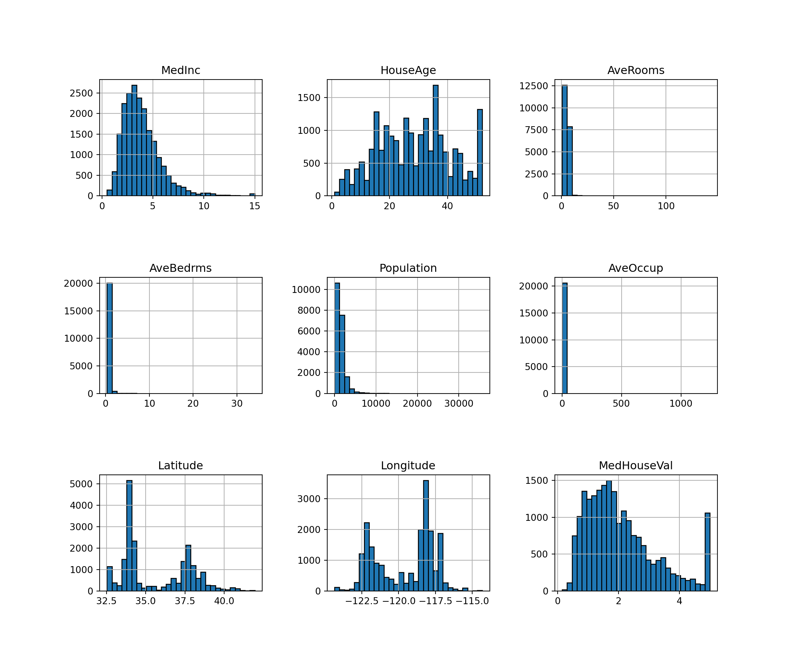
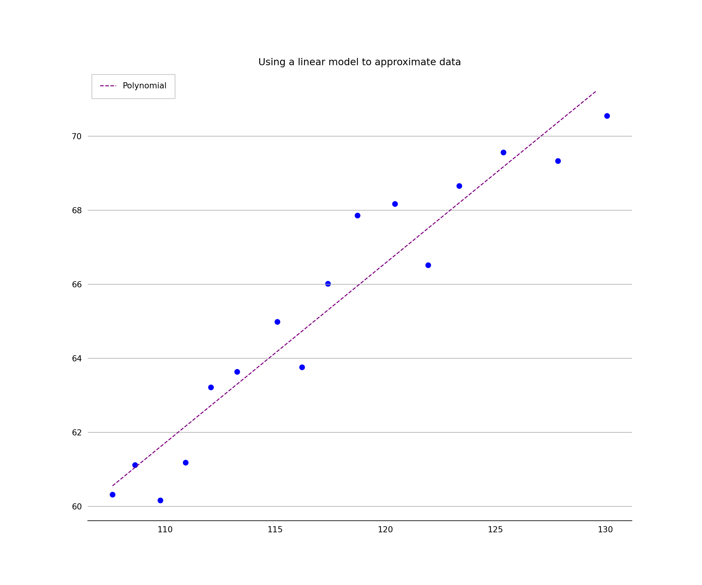
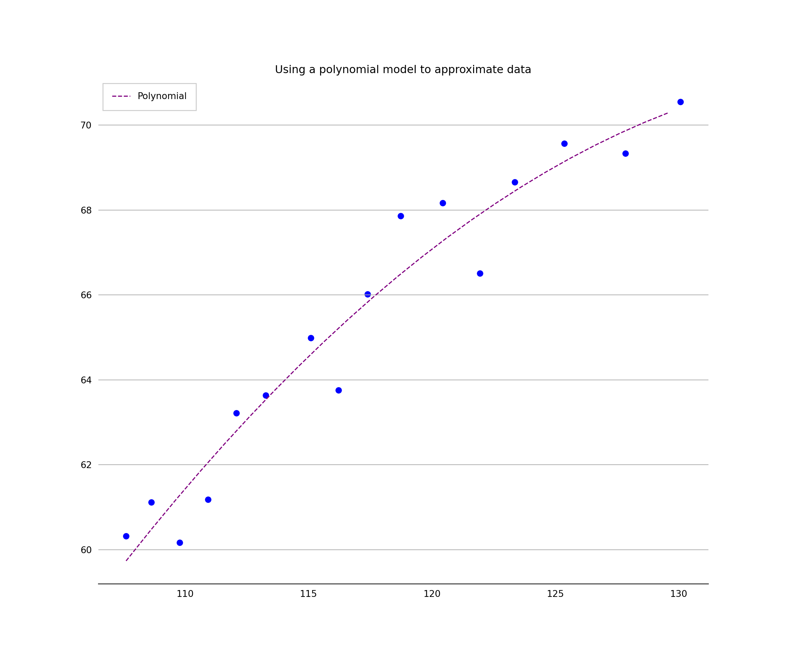

Chapter 5 Regression analysis
knitr::opts_chunk$set(echo = TRUE)
library(reticulate)
use_condaenv("tf")5.1 Importing python packages
import matplotlib.pyplot as plt
import matplotlib.dates as mdates
import pandas as pd
import numpy as np
import statistics
from scipy.stats import norm
from matplotlib.ticker import EngFormatter, StrMethodFormatterThe fundamental data type of NumPy is the array type called numpy.ndarray. The rest of this article uses the term array to refer to instances of the type numpy.ndarray.
from sklearn.datasets import fetch_california_housing
california_housing = fetch_california_housing(as_frame=True)
print(california_housing.DESCR)california_housing.data.head()
#Looks good - let's convert it into a pandas dataframecalifornia_housing_df = pd.DataFrame(california_housing.data)
print(california_housing_df)
california_housing.frame.hist(figsize=(12, 10), bins=30, edgecolor="black")plt.subplots_adjust(hspace=0.7, wspace=0.4)
plt.show()
5.2 Create a model and fit it
The next step is to create the regression model as an instance of LinearRegression and fit it with .fit().
import sklearn
from sklearn.linear_model import LinearRegression
from sklearn import linear_model
# Choose our variables of interest
x = california_housing_df[['HouseAge']]
y = california_housing_df[['MedInc']]
# Make a model
model = LinearRegression().fit(x, y)
# Analyse the model fit
r_sq = model.score(x, y)
print('coefficient of determination:', r_sq)## coefficient of determination: 0.014169090760525749print('intercept:', model.intercept_)## intercept: [4.38527909]print('slope:', model.coef_)## slope: [[-0.01796848]]5.3 Polynomial regression
We can fit different order polynomials by defining the relevant polynomial functions.
# Load in relevant packages
from numpy import arange
from pandas import read_csv
from scipy.optimize import curve_fit
from matplotlib import pyplot
# Define the true objective function for a linear estimation
def objective(x, a, b):
return a * x + b
# load the dataset
url = 'https://raw.githubusercontent.com/jbrownlee/Datasets/master/longley.csv'
dataframe = read_csv(url, header=None)
data = dataframe.values
# choose the input and output variables
x, y = data[:, 4], data[:, -1]
# curve fit
popt, _ = curve_fit(objective, x, y)
# summarize the parameter values
a, b = popt
print('y = %.5f * x + %.5f' % (a, b))
# plot input vs output## y = 0.48488 * x + 8.38067plt.scatter(x, y, c ="blue")
# define a sequence of inputs between the smallest and largest known inputs## <matplotlib.collections.PathCollection object at 0x1d9ec9750>x_line = arange(min(x), max(x), 1)
# calculate the output for the range
y_line = objective(x_line, a, b)
# create a line plot for the mapping function
plt.plot(x_line, y_line,
label='Polynomial',
color='purple',
alpha=1,
linewidth=1.2,
linestyle='dashed')## [<matplotlib.lines.Line2D object at 0x1d9ecafb0>]plt.title('Using a linear model to approximate data', fontsize=12)## Text(0.5, 1.0, 'Using a linear model to approximate data')plt.xlabel('', fontsize=10)## Text(0.5, 0, '')plt.ylabel('', fontsize=10)## Text(0, 0.5, '')plt.gca().spines['top'].set_visible(False)
plt.gca().spines['bottom'].set_visible(True)
plt.gca().spines['right'].set_visible(False)
plt.gca().spines['left'].set_visible(False)
plt.tick_params(
axis='x', # changes apply to the x-axis
which='both', # both major and minor ticks are affected
bottom=False, # ticks along the bottom edge are off
top=False, # ticks along the top edge are off
labelbottom=True) # labels along the bottom edge are off
plt.tick_params(
axis='y', # changes apply to the y-axis
which='both', # both major and minor ticks are affected
left=False, # ticks along the bottom edge are off
right=False, # ticks along the top edge are off
labelleft=True) # labels along the bottom edge are off
plt.grid(False)
plt.gca().yaxis.grid(True)
plt.legend(fancybox=False, framealpha=1, shadow=False, borderpad=1)## <matplotlib.legend.Legend object at 0x1d9ecb0a0>plt.savefig('linear_model_chart.png',dpi=300,bbox_inches='tight')
plt.show()
Now let’s try a polynomial model
# Fit a second degree polynomial to the economic data
from numpy import arange
from pandas import read_csv
from scipy.optimize import curve_fit
from matplotlib import pyplot
# Define the true objective function
def objective(x, a, b, c):
return a * x + b * x**2 + c
# Load the dataset
url = 'https://raw.githubusercontent.com/jbrownlee/Datasets/master/longley.csv'
dataframe = read_csv(url, header=None)
data = dataframe.values
# choose the input and output variables
x, y = data[:, 4], data[:, -1]
# curve fit
popt, _ = curve_fit(objective, x, y)
# summarize the parameter values
a, b, c = popt
print('y = %.5f * x + %.5f * x^2 + %.5f' % (a, b, c))
# plot input vs outputplt.scatter(x, y, c ="blue")
# define a sequence of inputs between the smallest and largest known inputsx_line = arange(min(x), max(x), 1)
# calculate the output for the range
y_line = objective(x_line, a, b, c)
# create a line plot for the mapping function
# create a line plot for the mapping function
plt.plot(x_line, y_line,
label='Polynomial',
color='purple',
alpha=1,
linewidth=1.2,
linestyle='dashed')plt.title('Using a polynomial model to approximate data', fontsize=12)plt.xlabel('', fontsize=10)plt.ylabel('', fontsize=10)plt.gca().spines['top'].set_visible(False)
plt.gca().spines['bottom'].set_visible(True)
plt.gca().spines['right'].set_visible(False)
plt.gca().spines['left'].set_visible(False)
plt.tick_params(
axis='x', # changes apply to the x-axis
which='both', # both major and minor ticks are affected
bottom=False, # ticks along the bottom edge are off
top=False, # ticks along the top edge are off
labelbottom=True) # labels along the bottom edge are off
plt.tick_params(
axis='y', # changes apply to the y-axis
which='both', # both major and minor ticks are affected
left=False, # ticks along the bottom edge are off
right=False, # ticks along the top edge are off
labelleft=True) # labels along the bottom edge are off
plt.grid(False)
plt.gca().yaxis.grid(True)
plt.legend(fancybox=False, framealpha=1, shadow=False, borderpad=1)plt.savefig('linear_model_chart.png',dpi=300,bbox_inches='tight')
plt.show()